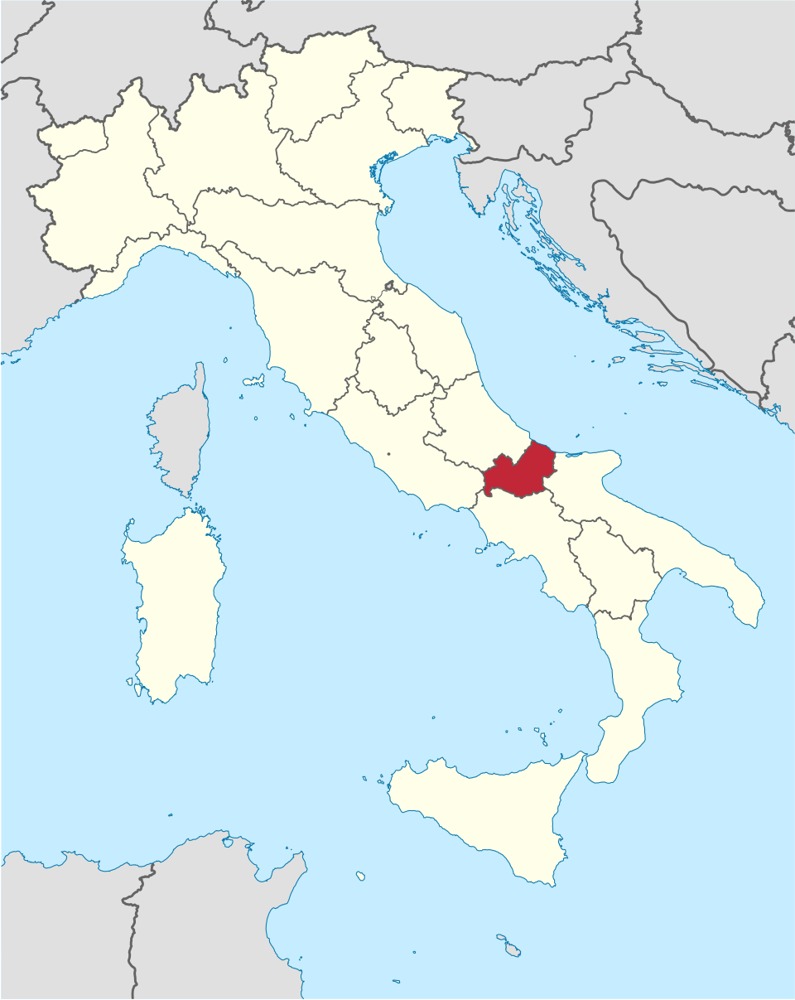
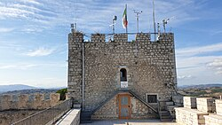
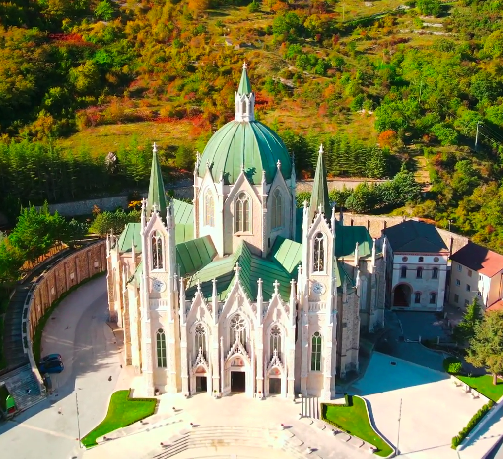
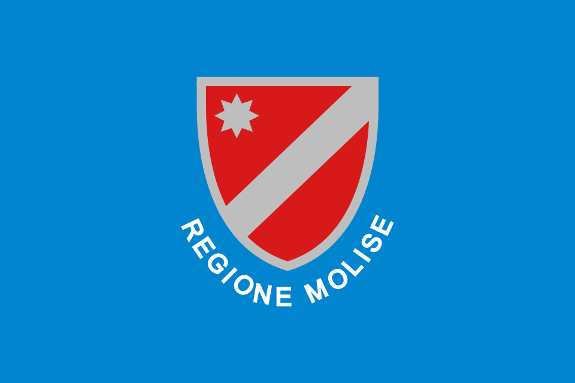
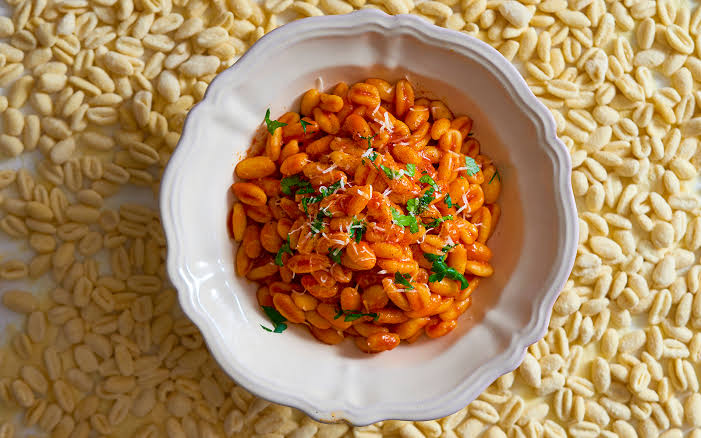
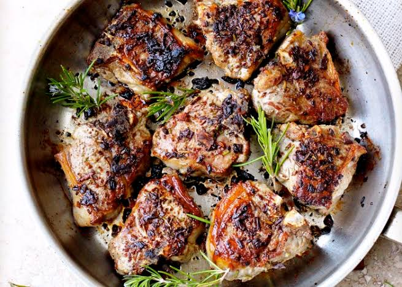
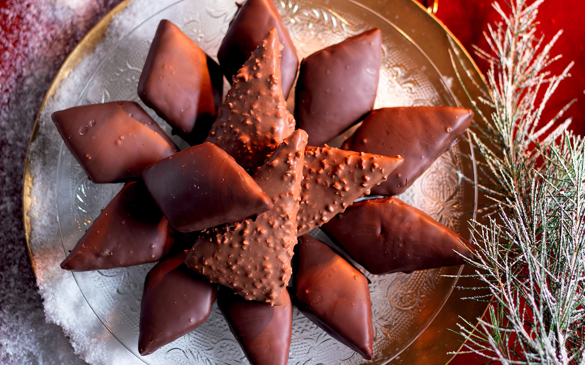
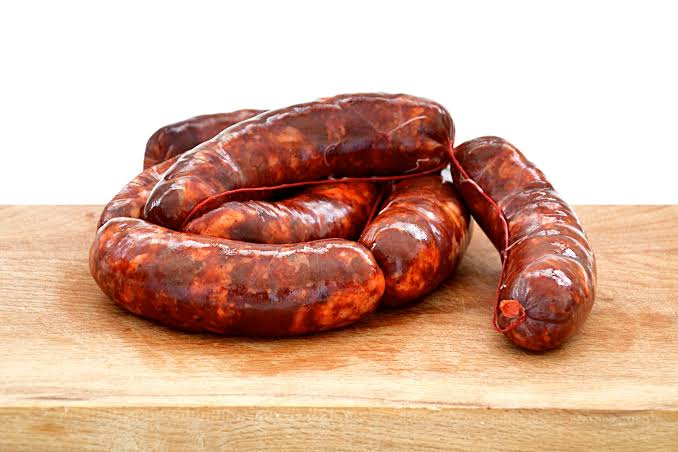
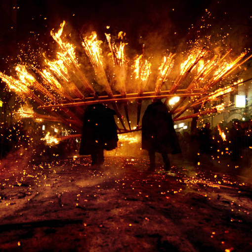

South-central Italy along the Adriatic coast
Campobasso
Mountains, hills, rivers, and small coastal areas
Italian and Molisan dialects
Cavatelli, Agenllo, Cured Meats
Ancient traditions, villages, and unspoiled landscapes

Molise is a small region in south-central Italy, nestled along the Adriatic coast between Abruzzo to the north and Apulia (Puglia) to the southeast. It shares borders with Lazio to the west and Campania to the south. Its geography is mostly mountainous and hilly, as it is dominated by the Apennine mountain range, with peaks, valleys, and rugged terrain shaping much of the interior landscape. The region also has a short stretch of coastline along the Adriatic Sea, offering a contrast between its inland mountains and coastal areas. Rivers such as the Biferno flow through Molise, contributing to its fertile valleys and supporting small agricultural communities scattered throughout the region.
The region is divided in 2 provinces: Campobasso and Isernia
Capital (and largest city): Campobasso
Molise has a varied climate that is influenced by both its mountainous interior and its small Adriatic coastline. Along the coast, the climate is generally mild, with warm summers and relatively cool, wet winters, moderated by sea breezes. In the inland and mountainous areas, the climate becomes more continental, with colder winters, frequent snowfall in higher elevations, and warmer but less humid summers. Rainfall is fairly evenly distributed throughout the year, with slightly wetter conditions in autumn and winter. Overall, Molise’s climate shifts noticeably depending on altitude and distance from the sea.
Molise has a predominantly mountainous and hilly topography, shaped by the Apennine mountain range that runs through much of the region. The interior is characterized by rugged terrain, steep slopes, and narrow valleys, with higher elevations found in the western and central areas. Moving toward the east, the landscape gradually lowers into gentler hills before reaching the narrow Adriatic coastline. This variation creates a mix of environments, from forested mountain areas to cultivated valleys and coastal plains, making Molise a region with diverse but compact physical geography.
The Molise region shared much of its early history with Abruzzo until the fall of the Roman Empire. Evidence from the Isernia La Pineta site, linked to Homo Aeserniensis, suggests that early inhabitants moved seasonally between the two areas.
During the Roman period, major centres in Molise became Roman colonies following the Samnite Wars, the Social War, and the Second Punic War. Important settlements included Isernia, Larino, Venafro, Morrone del Sannio, and Pietrabbondante. Over time, new Christian communities also developed, such as the Diocese of Trivento, continuing until the arrival of the Normans.
After the fall of Rome, Molise was invaded by the Goths and later the Lombards. Following the Lombards’ conversion to Catholicism, the Church gained significant influence in the region.
A key moment in Molise’s history came in 1221, when Holy Roman Emperor Frederick II established it as a district of imperial justice. During this period, several monasteries were founded, including the Madonna delle Grotte in Rocchetta a Volturno.
In 1963, Molise was officially separated from Abruzzo and established as a distinct region of Italy, becoming one of the country’s newest administrative regions.
As of 2026, Molise's population is 285,940.
In addition, the region covers an area of 4,461 km² and has a population density of 64.1/km².
Campobasso is the capital of Molise and is known for its historic old town, Castello Monforte, and traditional craftsmanship, especially the making of knives and scissors. It also serves as the region’s main administrative and cultural center, with important museums and universities.
Population: 47,399 people
Termoli is a coastal city on the Adriatic Sea known for its sandy beaches, fishing port, and the medieval old town built around the sea-facing promontory. Its most famous landmark is the Swabian Castle, which overlooks the coastline and reflects the city’s Norman and medieval history.
Population: 31,754 people
Isernia is one of the oldest settlements in Italy, known for the archaeological site of Isernia La Pineta, where some of the earliest evidence of human habitation in Europe was discovered. Today, it is a quiet inland city with historical churches, fountains, and a strong connection to Molise’s ancient past.
Population: 20,491 people
Venafro is known for its ancient Roman heritage and olive oil production, considered some of the finest in the region. The city features Roman ruins such as the amphitheatre and baths, as well as a well-preserved historic centre shaped by centuries of Greek, Roman, and medieval influence.
Population: 10,645 people

One of the most iconic landmarks in Molise, Castello Monforte sits on a hill overlooking Campobasso. Originally built in the 15th century, it offers panoramic views of the city and surrounding mountains. The castle is a symbol of the region’s medieval history and has survived several earthquakes over the centuries.

This impressive neo-Gothic sanctuary is one of the most important religious sites in Molise. Built in the late 19th century, it is known for its dramatic architecture set against a mountainous backdrop. The sanctuary is a major pilgrimage site and is often considered the spiritual heart of the region.

The flag is light blue, with the coat of arms of the region in the centre. The coat of arms is red with a diagonal silver band and an eight-pointed star in the corner. The words "Regione Molise" are in gold below.
The flag of Molise was officially adopted in 1975 (de facto), when it began being used as the regional emblem, and later received formal recognition in 2019 (de jure). It was introduced after Molise became an independent region in 1963 to represent its new administrative identity and autonomy within Italy.
Blue Background: The field color is purely an administrative standard used to represent the regional government, matching many other Italian regional flags.
Coat of Arms: This stylized emblem is historically derived from the historical coat of arms of the Contado di Molise, the foundational Norman county that gives the modern region its name.
Star: The white eight-pointed star in the flag of Molise is a symbolic element often associated with light, hope, and guidance. In a regional context, it represents Molise’s identity and unity as one of Italy’s smallest and youngest regions.
Silver Diagonal Band: The silver diagonal stripe on the flag of Molise represents the region’s historical identity and its connection to tradition and continuity.
Molise has a diverse linguistic landscape that includes Standard Italian, the Molisan dialect of Neapolitan, and a few small minority languages that have been preserved for centuries. Because of historical migration from the Balkans and southern Italy, the region is often seen as a living example of Italy’s linguistic heritage.
Molisano (Molisan): The most widely spoken local tongue, classified as an Italo-Romance dialect continuum belonging to the broader Neapolitan language family. It is split into eastern and western varieties.
Slavomolisano (Molise Slavic / Molise Croatian): Spoken by a small Croatian minority in just three villages in the Province of Campobasso: Montemitro, Acquaviva Collecroce, and San Felice del Molise. Brought by 16th-century refugees fleeing Ottoman expansion, this endangered language preserves an archaic form of Shtokavian-Ikavian Croatian.
Arbëreshë: An Albanian language variant spoken in specific enclaves, brought over by refugees in the 15th and 16th centuries.
Molise’s cuisine is simple, traditional, and closely tied to rural life and local ingredients. It is based mainly on pasta, bread, legumes, and locally raised meats such as lamb and pork, often flavored with herbs and olive oil. One of the region’s most well-known specialties is "cavatelli", a handmade pasta often served with rich meat sauces or vegetables. Molise also produces quality cheeses, such as pecorino, and is known for its truffles and extra virgin olive oil, which reflect its strong agricultural traditions.

Cavatelli al sugo is one of Molise’s most traditional pasta dishes. It features small, handmade shell-shaped pasta served with a rich tomato sauce, often enhanced with sausage or vegetables, reflecting the region’s simple and rustic cooking style.

Agnello alla molisana (Molisan-style lamb) is a popular dish made with slow-cooked lamb seasoned with herbs, garlic, and olive oil. It is typically prepared for special occasions and showcases the region’s strong pastoral traditions.

Mostaccioli molisani are traditional Molisan cookies made with honey, almonds, and cocoa, often shaped into diamond or oval forms and coated with a chocolate glaze. They are especially popular during holidays and celebrations, reflecting the region’s simple but rich baking traditions.

Molise is also known for its traditional cured meats, which are an important part of its rural cuisine. Local specialties include sausages and pork products made using time-honoured methods, often seasoned with spices and sometimes chili pepper. One well-known example is salsiccia di fegato, a liver sausage that reflects the region’s simple, hearty cooking traditions. These cured meats are typically enjoyed with bread or as part of rustic meals, showcasing Molise’s strong agricultural heritage.

Molise is known for its strong connection to traditional folk culture, where music, dance, and festivals play an important role in local life. Many towns still celebrate religious and seasonal festivals with processions, costumes, and traditional folk music that reflects centuries-old customs. The region is also recognized for its craftsmanship, including handmade textiles, ceramics, and ironwork, which are often produced in small artisan workshops. In addition, Molise preserves important archaeological and historical sites, such as Isernia La Pineta and ancient Samnite ruins, which highlight its deep cultural roots.
The Christmas Fire Festival, known as La 'Ndocciata di Agnone', is a traditional celebration held in the town of Agnone in Molise during the Christmas season. It features a spectacular procession where locals carry large wooden torches called ndocce through the streets, creating a river of fire and light. The festival has ancient roots and is believed to symbolize purification, community unity, and the light of Christmas. Today, it remains one of Molise’s most iconic cultural events and attracts visitors from around the world.
Leda Battisti is an Italian singer-songwriter born in Poggio Sannita, in the province of Isernia, Molise. She became known in the late 1990s with her debut single "L’acqua al deserto" (in English: 'The Water in the Desert'), which helped launch her music career and led to wider recognition in the Italian pop-rock scene. Her style combines melodic pop with rock influences and emotionally expressive lyrics. Over the years, she has remained a notable figure representing Molise in contemporary Italian music.
Want to learn more about Molise? Watch this video to explore its landscapes, history, culture, and traditions.
Watch the video →